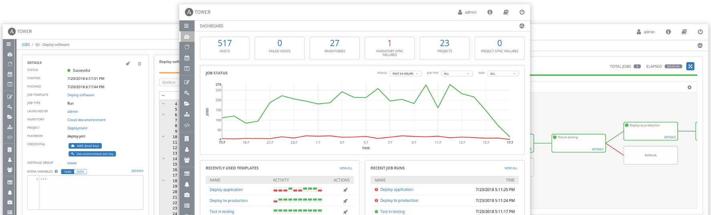
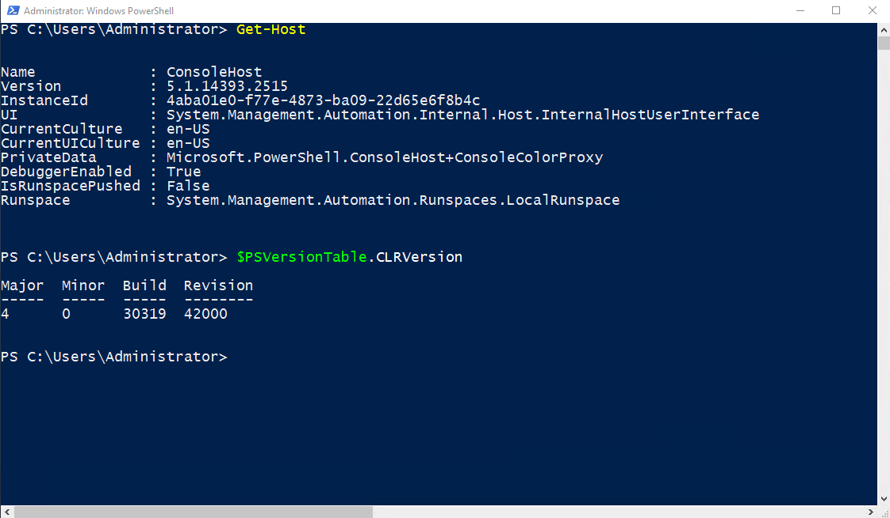
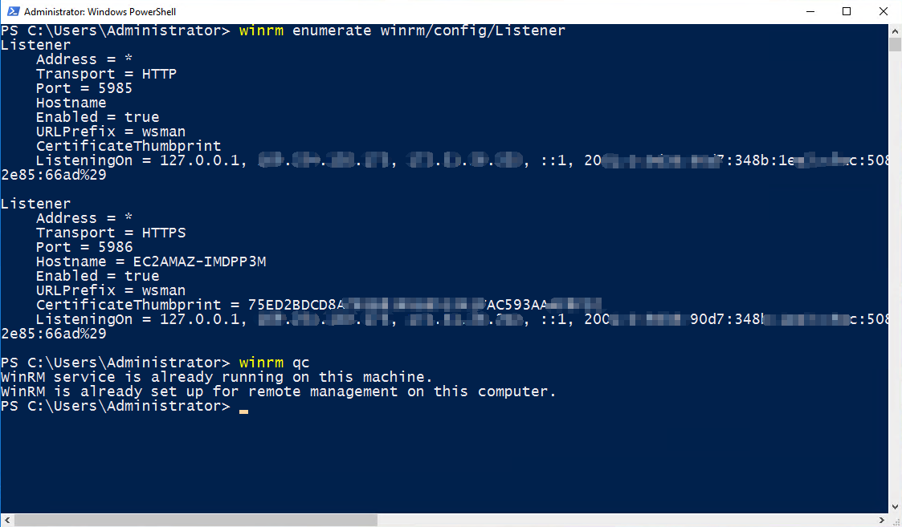
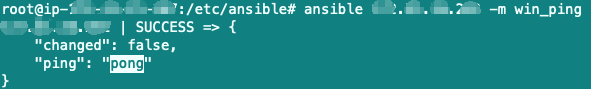

前言
作为时下最流行的自动化运维工具之一，Ansible 在业界应该是无人不知无人不晓的了。
作为一款轻量化的开源软件，它只需要简单地通过 SSH（对Linux平台）或 PowerShell（对Windows平台），无需被控主机安装客户端，就能实现远程操控、部署、升级等配置管理。
通过编写简单的 playbooks（yml） 脚本就能轻松对成千上万的主机进行区域管控、日常巡检等任务。
而 Ansible-Tower （旧称 AWX）作为其配套界面，使得 Ansible 更容易上手。

这里提供一些官方资料：
- Ansible 官网 : https://www.ansible.com/
- Ansible-Tower 官网 : https://www.ansible.com/products/tower
- Ansible 官方文档（全） : https://docs.ansible.com/
- Ansible 官方教程（英文版） : https://docs.ansible.com/ansible/latest/index.html
- Ansible 官方教程（中文版） : http://www.ansible.com.cn/docs/intro.html
- Ansible Github : https://github.com/ansible
1. 部署说明
本文主要记录了在 ubuntu 上部署 Ansible 和 Ansible-Tower 的过程。
虽然 Ansible-Tower 支持在多种操作系统版本上部署，但对于 ubuntu 只支持 14.0 和 16.0 两个版本（而 Ansible 则是支持到 ubuntu 18.0）。
为了可以同时安装 Ansible 和 Ansible-Tower ，本文选择了 ubuntu 16.0 系统进行安装。
1.1. 安装环境
- 操作系统：Ubuntu 16.04.5 LTS
- 预装软件：python 2.7、openssh
1.2. 安装清单
- pywinrm （要求版本至少为 0.2.2，若不管理 windows 机器则无需安装）
- Ansible-2.7.5 （ 要求 python 版本 2.6 或 2.7 ）
- PostgreSQL-9.6
- Ansible-Tower-3.3.3 （ 要求 Ansible 版本至少为 2.2，PostgreSQL版本至少为 9.6 ）
预装组件要求可查看官方手册指引：https://docs.ansible.com/ansible-tower/latest/html/quickinstall/prepare.html
2. 安装步骤
注意下述步骤直接依次复制执行即可完成整个部署流程，其中对于命令行前缀：
- 【#】表示 root 用户
- 【$】表示普通用户
2.1. 安装 pywinrm（可选）
# apt install python-pip # 安装 pip
# pip install --upgrade pip # 更新 pip
# pip install "pywinrm>=0.2.2" # 使用 pip 安装 pywinrm，此模块用于远程管理 windows 机器2.2. 添加相关用户并授权
# adduser ansible # 添加 ansible 专用用户
# chmod u+w /etc/sudoers # 修改 sudo 配置文件为可写
# vi /etc/sudoers # 修改 sudo 配置文件，对 ansible 和 postgres 用户授权，便于后面安装
root ALL=(ALL:ALL) ALL
ansible ALL=(ALL:ALL) ALL
awx ALL=(ALL:ALL) ALL # 安装 Ansible-Tower 时自动创建的用户
postgres ALL=(ALL:ALL) ALL # 安装 PostgreSQL 时自动创建的用户
# chmod u-w /etc/sudoers2.3. 安装 Ansbile-2.7.5
相关过程整理自官方手册：https://ansible-tran.readthedocs.io/en/latest/docs/intro_installation.html#apt-ubuntu
# su - ansible # 切换到 ansible 用户
$ sudo apt-get install software-properties-common # 在早期 Ubuntu 发行版中, “software-properties-common” 名为 “python-software-properties”，根据实际情况修改
$ sudo apt-add-repository ppa:ansible/ansible
$ sudo apt-get update
$ sudo apt-get install ansible # 安装
$ ansible --version # 若安装成功，核验版本
ansible 2.7.5
config file = /etc/ansible/ansible.cfg
configured module search path = [u'/home/ansible/.ansible/plugins/modules', u'/usr/share/ansible/plugins/modules']
ansible python module location = /usr/lib/python2.7/dist-packages/ansible
executable location = /usr/bin/ansible
python version = 2.7.15rc1 (default, Nov 12 2018, 14:31:15) [GCC 7.3.0]关于 Asible 的相关配置：
○ 配置文件位置为/etc/ansible/ansible.cfg
○ 主机清单文件为/etc/ansible/hosts（用于配置主机分组、连接方式等）
○ playbooks 目录位置默认为/etc/ansible/，若目录不存在，可手工创建
2.4. 安装 PostgreSQL-9.6
部分过程参考自CSDN：https://blog.csdn.net/zpf336/article/details/50843674
# 注意 Ubuntu 16.0 默认的 PostgreSQL 安装源是 9.5 版本的，不符合要求，需要更新安装源后再安装
$ sudo add-apt-repository "deb http://apt.postgresql.org/pub/repos/apt/ xenial-pgdg main"
$ wget --quiet -O - https://www.postgresql.org/media/keys/ACCC4CF8.asc | sudo apt-key add -
$ sudo apt-get update
$ sudo apt-get install postgresql-9.6
# 安装完成后会自动新增数据库用户 postgres
$ sudo su postgres
$ psql postgres # 登录数据库
ALTER USER postgres with PASSWORD 'postgres'; # 修改 postgres 用户的数据库密码
\q # 退出数据库
# 修改数据库配置（ 默认只允许本地连接，由于只有 Ansible-Tower 用，因此无需更改相关连接配置 ）
$ vi /etc/postgresql/<pg_version>/main/postgresql.conf # 此处的 <pg_version> 根据实际安装的 PostgreSQL 版本修改
password_encryption = on # 去掉注释，启用密码验证登录方式
# 重启数据库使配置生效
$ sudo systemctl unmask postgresql
$ sudo systemctl restart postgresql
$ psql -U postgres -h 127.0.0.1 # 测试本地账密登录
CREATE USER ansible WITH PASSWORD 'ansible'; # 创建 Ansible-Tower 用的数据库用户 ansible
CREATE DATABASE tower OWNER ansible; # 创建 Ansible-Tower 用的数据库 tower
GRANT ALL PRIVILEGES ON DATABASE tower TO ansible; # 把 tower 库的所有权限授权给 ansible 用户
\q # 退出数据库
# 测试使用 ansible 用户登录 tower 数据库：
$ psql -U ansible -h 127.0.0.1 -d tower
\q
# 可选（需图形界面支持）
$ sudo apt-get install pgadmin3 # 可安装 PostgreSQL 库的图形客户端
$ pgadmin3 # 启动客户端2.5. 安装 Ansible-Tower-3.3.3
相关过程整理自官方手册：https://docs.ansible.com/ansible-tower/latest/html/quickinstall/download_tower.html
部分过程参考自CSDN：https://blog.csdn.net/CodyGuo/article/details/78875717
在 ubuntu 系统下，Ansible-Tower 只能下载 Ansible 的 playbooks 脚本，由 Ansible 在线安装。
playbooks 脚本可从 此处 提取（目前最后的 latest 版是3.3.3）。
下载最后版本 ansible-tower-setup-latest.tar.gz 后，上传到任意目录即可。
# 上传到 ansible-tower-setup-latest.tar.gz 到 /tmp 目录
$ sudo su ansible # 切换 ansible 用户执行安装过程
$ tar xvzf ansible-tower-setup-latest.tar.gz # 解包
$ cd ansible-tower-setup-<tower_version> # tower_version 根据实际的 Ansible-Tower 版本号修改
$ vi inventory # 修改安装配置，根据前面流程设置的参数对号入座即可
[tower]
localhost ansible_connection=local
[database]
[all:vars]
admin_password='admin'
pg_host='127.0.0.1'
pg_port='5432'
pg_database='tower'
pg_username='ansible'
pg_password='ansible'
rabbitmq_username=tower
rabbitmq_password='admin'
rabbitmq_cookie=cookiemonster
# 执行安装
$ sudo ./setup.sh2.6. Ansible-Tower授权
- 安装成功后，可通过访问
https://<host_ip>/登录 Ansible-Tower （只能使用 HTTPS 协议） - 登录账密在前面安装时已配置为：admin/admin （登录成功后，可以在【Users】里面修改）
- 登录成功后需要导入License授权，License 可以在官网申请，官方提供了 10 个管理节点的 免费 License
3. 附：被控主机为 Windows 时的额外配置
相关内容参考自：
○ 官方指引手册（英文版）：https://docs.ansible.com/ansible/latest/user_guide/windows_setup.html
○ 官方指引手册（中文版）：https://ansible-tran.readthedocs.io/en/latest/docs/intro_windows.html#
○ 百度百家号：https://baijiahao.baidu.com/s?id=1580415145694814528&wfr=spider&for=pc
为了控制 Windows 主机，作为被控端的 Windows 必须具备以下几个条件：
- 操作系统版本限制为：桌面版 Windows 7、8.1、10 ；服务器版 Windows Server 2008、2012、2016
- Windows上必须已经安装了 PowerShell 3.0 或更新版本
- Windows上必须已经安装了 .NET Framework 4.0 或更新版本
- WinRM 服务已经被创建并启动服务，相关服务端口没有被防火墙等拦截
3.1. 查看 PowerShell 与 .NET 版本并升级
- 运行 PowerShell （注意不是 CMD，一般 Win8 之后都默认安装）
- 输入命令
Get-Host可查看当前 PowerShell 版本 - 输入命令
$PSVersionTable.CLRVersion可查看当前 .NET Framework 版本 - 若 PowerShell 版本不满足要求，可参考 此处 的升级步骤进行升级

3.2. 安装并查看 WinRM 服务
- 详细安装步骤可参考 这里
- 为方便起见，Ansible 官方已提供了 WinRM 的自动安装与配置脚本：https://github.com/ansible/ansible/blob/devel/examples/scripts/ConfigureRemotingForAnsible.ps1
- 下载脚本后，在 PowerShell 执行命令即可完成安装：
powershell.exe -ExecutionPolicy ByPass -File ConfigureRemotingForAnsible.ps1 - 安装完成后，输入命令
winrm enumerate winrm/config/Listener或winrm qc可查看 WinRM 的服务状态 - 确认 WinRM 正在监听 HTTPS 5986 端口即配置成功，注意防火墙也要开放相关端口

3.3. Ansible 测试 WinRM 连接
注意，Ansible 主机必须已安装 pywinrm，相关步骤详见 这里
测试方法：修改 Ansible 主机的配置文件 /etc/ansible/hosts，在其末尾添加一行（其中 ${win_ip}、 ${win_username}、 ${win_password} 需根据实际情况修改）：
${win_ip} ansible_user="${win_username}" ansible_password="${win_password}" ansible_port="5986" ansible_connection="winrm" ansible_winrm_server_cert_validation="ignore" ansible_winrm_transport="ssl"然后执行命令 ansible ${win_ip} -m win_ping 即可，若响应为 pong 则配置成功：
